Watching a Hydraulic Fracture Open, Close, and Heal
Hydraulic fracturing is often introduced as a simple operation: inject fluid, raise pressure, and open a crack. For geophysics, the more interesting question starts after that sentence. How does the rock stiffness change while the fracture is loaded, how quickly does it recover after shut-in, and what part of the recovery is not a pressure effect but a slow rebuilding of rough contacts?
Blue Canyon Dome is a useful place to ask that question because it sits between a laboratory experiment and a reservoir-scale field test. The Sandia/Lawrence Berkeley field material used a compact five-well geometry in shallow rhyolite, with one injection well and nearby monitoring wells, so individual source-receiver paths can still be interpreted without pretending that the whole fracture network has been imaged.
Instead of relying only on microearthquakes, the experiment repeatedly sent active seismic signals through the test volume during hydraulic operations. By comparing each repeated waveform with a reference, we can ask a focused and physically interpretable question: did this path become stiffer or softer as the fracture opened, closed, and healed?
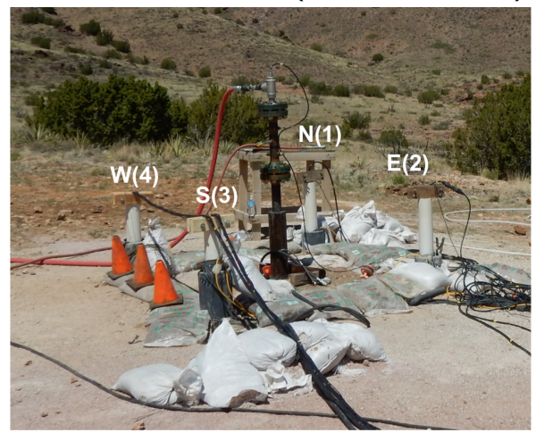
Blue Canyon Dome used a small five-well geometry: one stimulation well and four nearby monitoring wells. The scale made the experiment field-like, but still small enough to read as a set of repeated seismic paths through a stimulated volume rather than as a full reservoir survey.
- Repeat the source: active shots make quiet stiffness changes visible.
- Read each path: different paths sample different parts of the fracture-stress system.
- Separate recovery: fast closure and slow contact healing leave different seismic signatures.
1) A Small Field Test With a Clear Question
A full hydraulic-fracturing reservoir is usually too complicated for a first-principles story. Many fractures may open, slip, close, and interact at the same time, while the monitoring array sees only an incomplete projection of that behavior. Blue Canyon Dome is smaller and cleaner. The wells were close together, the injection point was shallow, and the target rock was rhyolite below a weathered near-surface layer. That makes the experiment a bridge: more realistic than a bench-top fracture test, but still constrained enough for path-by-path reasoning.
The scientific question is deliberately modest: can repeated seismic waves tell us something about fracture behavior during and after hydraulic stimulation? This is not a full image of the fracture network and not a complete mechanical inversion. The goal is a fast interpretation from trace-to-trace comparison: where the waveforms change, when they change, and whether the change looks like stiffening, weakening, or recovery.

The CWP presentation interprets the main feature as a W-E vertical fracture crossing the central stimulation point. The dashed paths are not a tomographic image; they are the paths whose repeated waveforms can be compared through time.
2) The Pump Schedule Is the Experiment's Clock
A monitoring result is only meaningful if we can compare it with the operation timeline. The Blue Canyon Dome sequence included a baseline, two stimulation stages, and pressure tests. That operational history gives the seismic data a clock: before injection, during pressure increase, at shut-in, and during the post-injection recovery. The material for this page focuses on pressure test #2, because that interval is clean enough to compare the seismic response with pressure change, flow rate, shut-in, and relaxation.
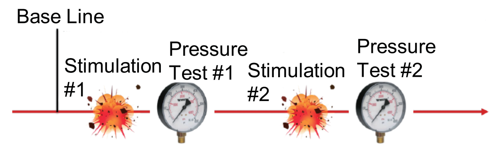
The seismic changes should be read against the hydraulic operation: baseline first, then stimulation and pressure testing. Pressure test #2 is the key interval for connecting the seismic response to fracture behavior and relaxation.
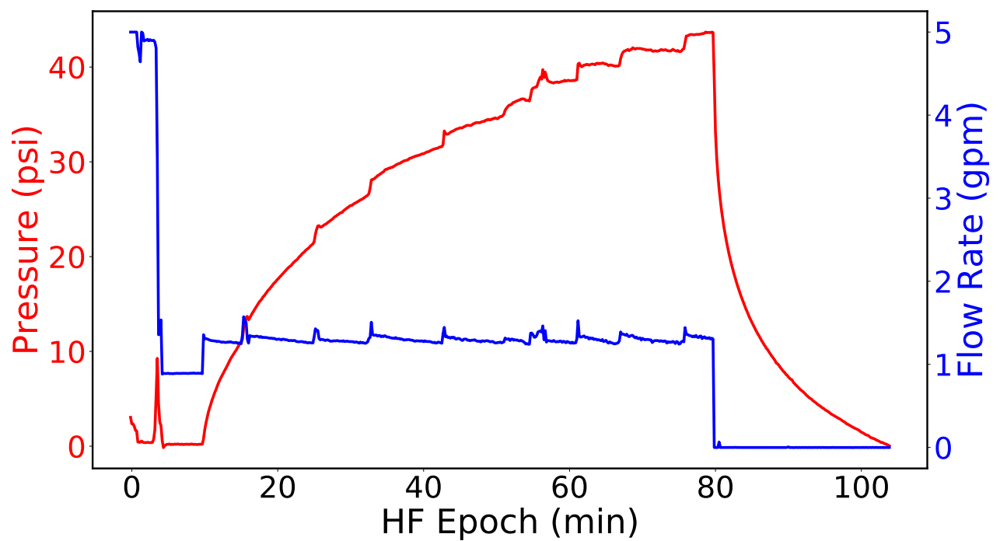
Pressure rises during injection and then drops sharply at shut-in. The velocity changes below are interpreted against this hydraulic clock: loading during injection, rapid pressure release at shut-in, and recovery after flow stops.
3) Repeating the Same Seismic Question Every Minute
Passive microseismic monitoring listens for failures that radiate seismic energy. That is useful, but it misses deformation that is mechanically important and seismically quiet. A fracture can open, close, or regain stiffness without producing a neat earthquake catalogue. Continuous active-source monitoring adds a controlled measurement: send a repeatable signal, record the response, and compare it with a reference.
The Blue Canyon Dome data were collected at about one-minute temporal resolution. That is fast enough to follow the operation almost as it happens, but it also creates practical problems: individual traces are noisy, the useful windows are short, and P- and S-wave energy can overlap. The interpretation therefore has to stay path-wise and cautious. The strength of the experiment is not that every detail is resolved; it is that the same question is asked repeatedly at a time scale close to the hydraulic operation.
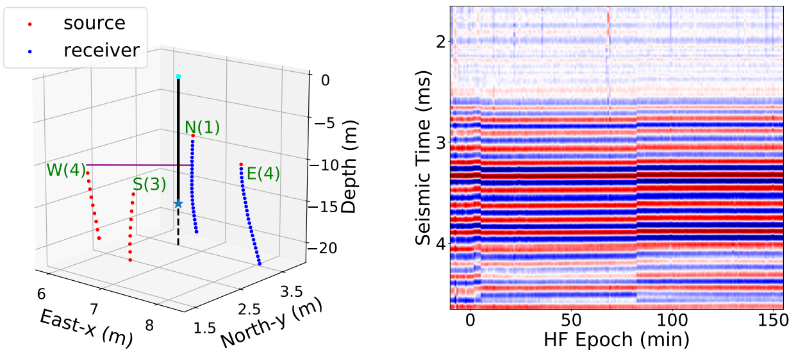
The left panel shows source and receiver positions in the compact geometry. The right panel shows repeated records through the hydraulic-fracturing epoch. Small shifts in these repeated waveforms are the raw evidence for changes in apparent seismic velocity.
4) Coda Wave Interferometry Turns Tiny Shifts Into a Stiffness Proxy
The measurement tool is coda wave interferometry. The idea is simple: compare a reference waveform with a later waveform from the same source-receiver pair. If the later waveform must be stretched to match the reference, the wavefield is arriving later and the apparent velocity decreased. If it must be compressed, the apparent velocity increased. In shorthand, dv/v = -dt/t.
This does not directly photograph a fracture. It gives a sensitive path-wise proxy for elastic change. In rock, seismic velocity is tied to stiffness: open cracks and weaker contacts tend to slow waves, while crack closure or increased contact force can speed them up. That is why the method is useful here. The sign and timing of dv/v can be read as a compact mechanical clue, provided we remember that each path averages over a finite volume of rock.
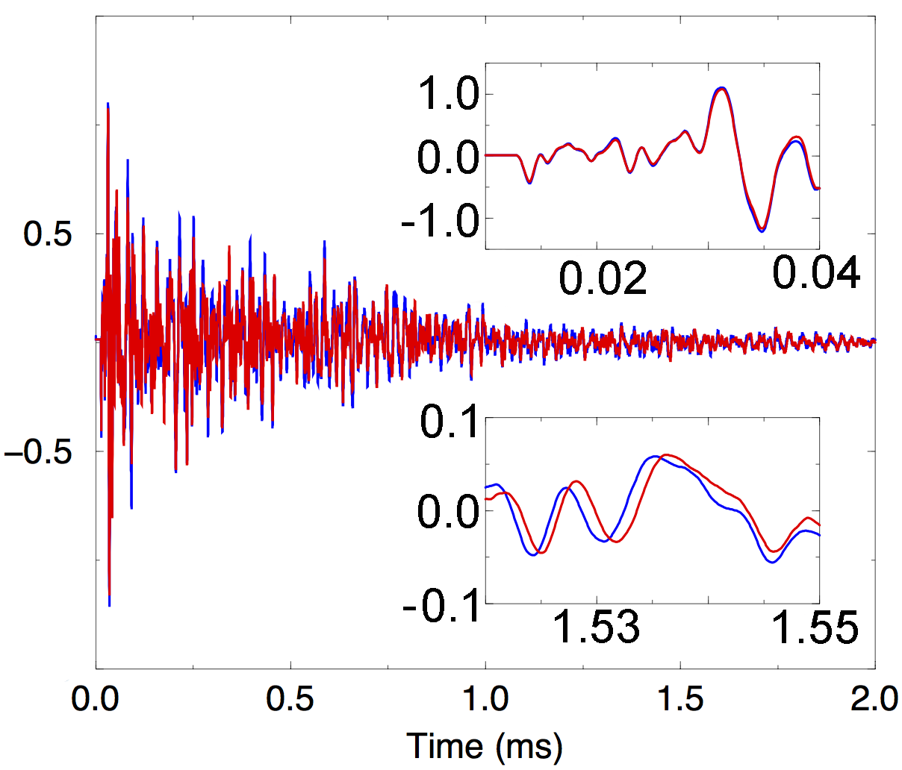
The early part of the waveform can look almost unchanged while the later coda is measurably shifted. That is why the coda is valuable: it samples the medium through many scattered paths and can be very sensitive to small stiffness changes.
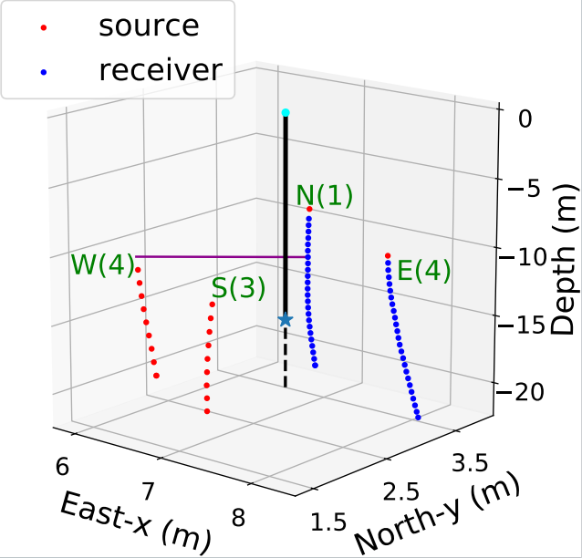
This source-receiver pair gives one path-wise view through the stimulated rock. The measurement is not an image; it is a repeated comparison along this path.
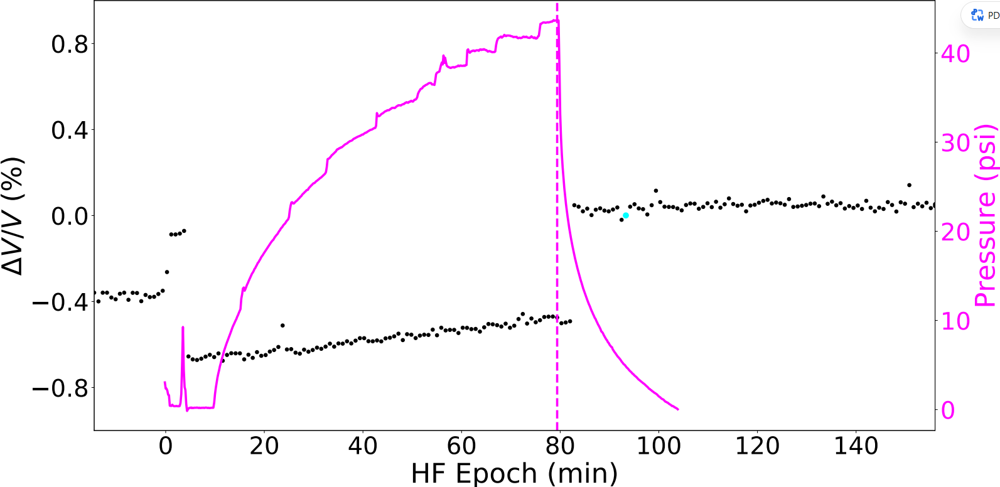
The black points show the apparent velocity change inferred from waveform stretching. The pressure curve gives the timing needed to connect the seismic response to the hydraulic operation.
5) The Main Observation: The Fracture Response Is Not One Simple Signal
A tempting interpretation would be: pressure rises, the fracture opens, velocity drops, and then velocity returns after shut-in. The Blue Canyon Dome material points to something more useful and more realistic. Different source-receiver paths can carry different signs and timing, because they sample different parts of the stress and fracture system. A path near the main opening fracture does not have to behave like a path dominated by surrounding stress redistribution.
The clearest path is the one crossing the inferred W-E crack. During pressure test #2, that path shows a recovery that is not instantaneous. The working interpretation separates two processes: fast relaxation, associated with crack closure as pressure drops, and slow relaxation, associated with contact healing after the fracture surfaces touch again.
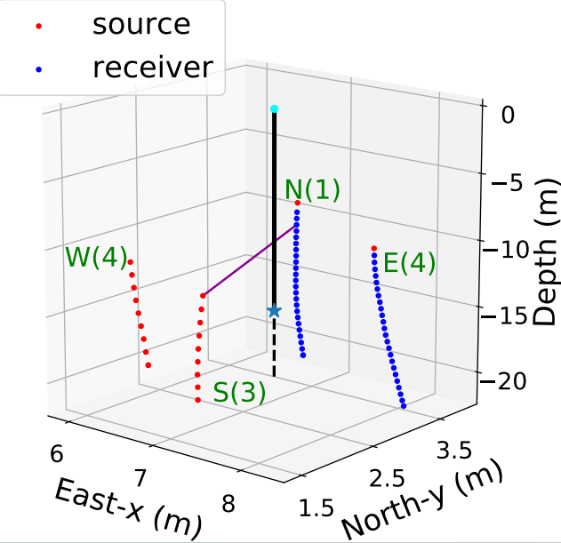
This source-receiver pair crosses the working W-E fracture picture, making it the clearest path for discussing closure and recovery.
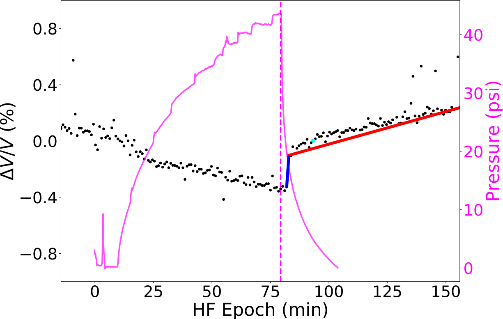
The immediate jump after shut-in is the fast part of the recovery. The later trend continues more gradually, suggesting that the fracture-contact system keeps changing after the pressure drop.
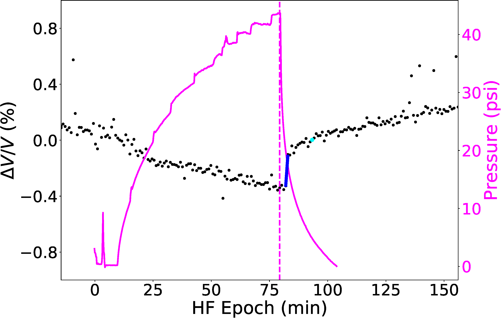
The fast response occurs as pressure is released and the fracture rapidly regains part of its stiffness.
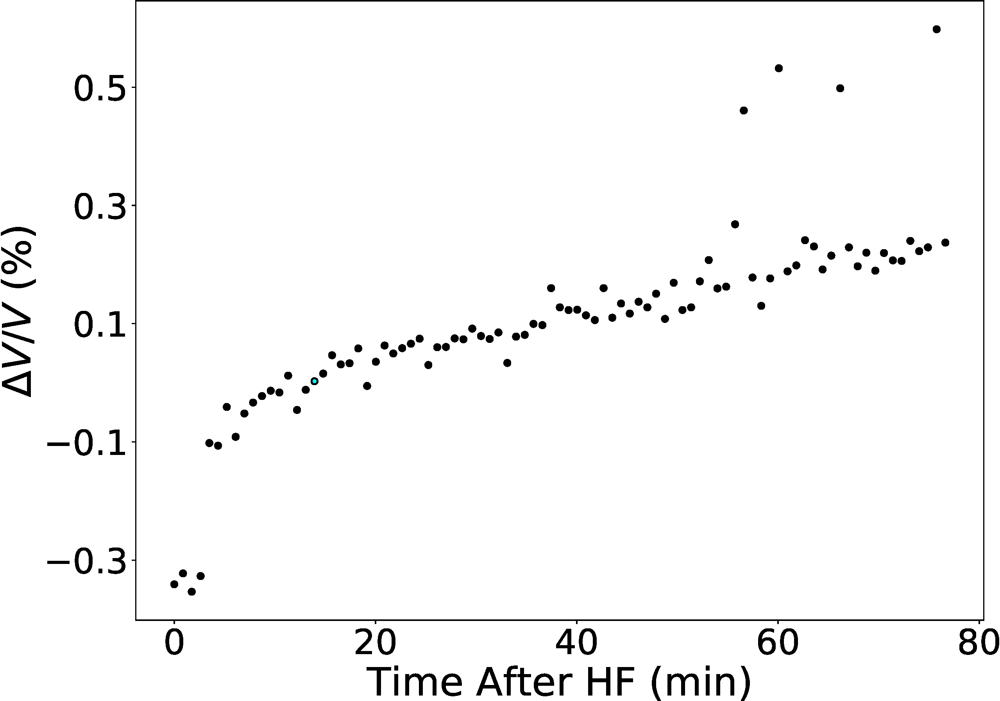
Replotting the recovery against time after hydraulic fracturing makes the slow trend easier to see. The rock does not return to its prior state all at once.
Why this matters: the result is more than "the velocity changed." The timing of the change gives a physical interpretation. A rapid jump after shut-in is consistent with pressure release and crack closure. A slower recovery suggests that the rock continues to regain stiffness after the fracture is mechanically closed.
6) Why Slow Recovery Makes Physical Sense
Rocks are not smooth elastic blocks. They are made of grains, pores, cement, and cracks. At the scale of a fracture surface, the two sides touch at many small asperities rather than across a perfectly flat plane. When fluid pressure opens a crack, those contacts are disturbed. When pressure drops, the fracture can close quickly, but the contact network may keep evolving.
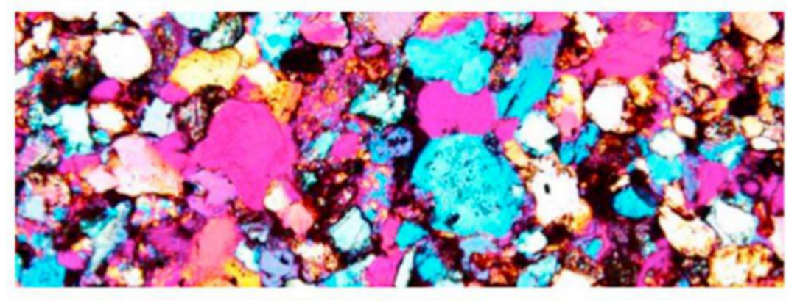
The elastic response of rock is strongly controlled by grain contacts, pores, and small cracks. That is why a small mechanical disturbance can produce a measurable velocity change.
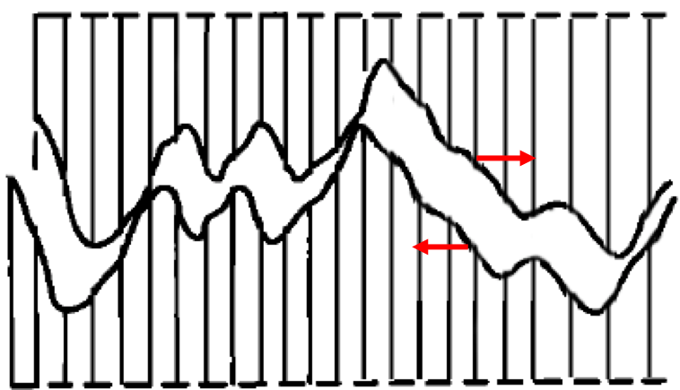
Closing a rough fracture is a contact problem. Some contacts return quickly, while others strengthen more gradually as the surfaces settle and heal.
This is where the Blue Canyon Dome observation connects to nonlinear rock physics. Laboratory experiments and contact-based models show that rocks can recover slowly after being disturbed. In the field data, the slow part of the relaxation is therefore not just a nuisance trend; it is a clue that the fracture has memory. The field measurement and the laboratory analogy point in the same direction: hydraulic stimulation changes the contact network, and the contact network does not necessarily rebuild on the same time scale as the pressure drop.
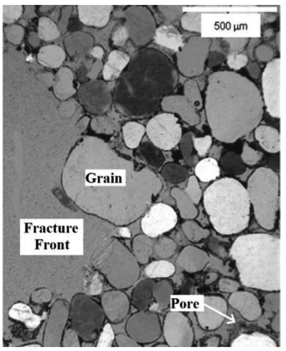
Hydraulic fracturing is driven at the field scale, but the recovery of stiffness is controlled by small-scale contacts, pores, cracks, and fracture surfaces.
7) What the Data Can and Cannot Support
This blog should not oversell Blue Canyon Dome as a finished fracture-imaging result. The acquisition geometry was not optimized for this specific interpretation, the noise level was high, the coda windows were short, and the stretching measurement assumes a simple effective velocity perturbation along each path. Hydraulic fracturing is strongly heterogeneous and nonlinear, so that assumption is useful but incomplete.
The value is that the method is cheap, fast, and physically interpretable. It can track quiet stiffness changes even when the rock does not produce obvious seismic events. Used carefully, it gives a practical way to monitor fracture behavior in near-real time and to design better experiments. For geothermal stimulation, carbon storage, and other subsurface engineering problems, that kind of measurement is valuable because risk is controlled not only by where fractures are, but also by how they evolve after operations change.
The next experiment I would want: a controlled lab or field test designed around one dominant fracture, with longer usable waveforms, cleaner repeatable sources, and source-receiver paths chosen specifically to separate fracture opening, stress loading, closure, and healing.
Related Reading and Slides
Related: Snieder, Gret, Douma & Scales, Coda Wave Interferometry for Estimating Nonlinear Behavior in Seismic Velocity (2002).
Related: Li, Sens-Schonfelder & Snieder, Nonlinear elasticity in resonance experiments (2018).
Field-test report: Knox, H., Ajo-Franklin, J., Johnson, T., Morris, J., Grubelich, M., James, S., Rinehart, A., Preston, L., Vermeul, V., Strickland, C., Knox, J., King, D., and Ulrich, C. Imaging fracture networks using joint seismic and electrical change detection techniques. Technical report, Sandia National Laboratories, 2017.